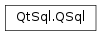

QSql¶
Detailed Description¶
The QSql namespace contains miscellaneous identifiers used throughout the Qt SQL module.
See also
Qt SQL
-
PySide2.QtSql.QSql.Location¶ This enum type describes special SQL navigation locations:
Constant Description QSql.BeforeFirstRow Before the first record. QSql.AfterLastRow After the last record. See also
-
PySide2.QtSql.QSql.ParamTypeFlag¶ This enum is used to specify the type of a bind parameter.
Constant Description QSql.In The bind parameter is used to put data into the database. QSql.Out The bind parameter is used to receive data from the database. QSql.InOut The bind parameter is used to put data into the database; it will be overwritten with output data on executing a query. QSql.Binary This must be OR’d with one of the other flags if you want to indicate that the data being transferred is raw binary data.
-
PySide2.QtSql.QSql.TableType¶ This enum type describes types of SQL tables.
Constant Description QSql.Tables All the tables visible to the user. QSql.SystemTables Internal tables used by the database. QSql.Views All the views visible to the user. QSql.AllTables All of the above.
-
PySide2.QtSql.QSql.NumericalPrecisionPolicy¶ Numerical values in a database can have precisions greater than their corresponding C++ types. This enum lists the policies for representing such values in the application.
Constant Description QSql.LowPrecisionInt32 Force 32bit integer values. In case of floating point numbers, the fractional part is silently discarded. QSql.LowPrecisionInt64 Force 64bit integer values. In case of floating point numbers, the fractional part is silently discarded. QSql.LowPrecisionDouble Force doublevalues. This is the default policy.QSql.HighPrecision Strings will be used to preserve precision. Note: The actual behaviour if an overflow occurs is driver specific. The Oracle database just returns an error in this case.
© 2018 The Qt Company Ltd. Documentation contributions included herein are the copyrights of their respective owners. The documentation provided herein is licensed under the terms of the GNU Free Documentation License version 1.3 as published by the Free Software Foundation. Qt and respective logos are trademarks of The Qt Company Ltd. in Finland and/or other countries worldwide. All other trademarks are property of their respective owners.